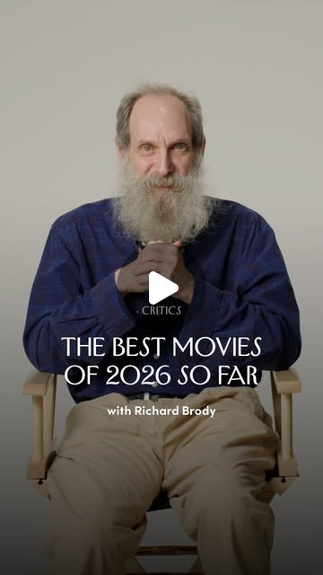

Instagram Reel

The New Yorker film critic Richard Brody discusses his three favorite films o...
video transcript (enriched by ClaudeClaw)
Summary
[CAPTION]
The New Yorker film critic Richard Brody discusses his three favorite films of 2026 so far—a historical documentary, a movie starring a British pop star, and a Canadian filmmaker’s feature debut.
[VIDEO]
I'm Richard Brody.
[CAPTION]
The New Yorker film critic Richard Brody discusses his three favorite films of 2026 so far—a historical documentary, a movie starring a British pop star, and a Canadian filmmaker’s feature debut.
[VIDEO]
I'm Richard Brody. I'm a film critic at the New Yorker, and these are the best movies of the first half of 2026. The third best movie so far is Fiume o Morte, Fiume or Death by the Croatian filmmaker Igor Bezirvit. It's a historical documentary that's as original in its style as it is informative in its content. In 1919, right after the end of the First World War, the Italian poet Gabriele D'Annunzio, a fervent nationalist, marched his own private militia into the disputed city of Fiume, established a dictatorship, and persecuted the Croatian minority and others. Basinovich tells this story with fanatical attention to archival material. He gets people in present-day Rijeka, many of them from off the street, to reenact what is seen in this footage. By having ordinary people portray the dictator, Bezinovich both shows how abnormal such a figure is and shows how close most of us are at any given moment to such cruel abuses of power. The second best film of the first half of 2026 is Erupcija, Polish for Eruption, a truly international film, made by the American director Pete Oes, filmed in Warsaw, and starring the British pop star Charlie XCX, whom, if you didn't know her as a pop star and you saw her in this movie, you would say to yourself, what an interesting independent film actress. The story then expands exponentially. Nell is in a relationship with a Polish woman named Ula. And I love you. Bethany and Rob cross paths with an American expatriate artist named Claude, played by Jeremy O'Harris. And all of a sudden, this crisscross and tangle of relationships makes this romantic melodrama somewhat explosive. Volcanoes kill people. The movie's a remarkable celebration of the energy of urban life and of the mysteries of love. The best film of the first half of 2026 is Blue Heron, the first feature directed by the Canadian filmmaker Sophie Romvari. It's very much a personal film, a story derived from her own family life. And memory itself is the main subject of the film. It's set in British Columbia, where she's from, in a Hungarian family, the youngest of them, a girl named Sasha, is aware, painfully aware, that her older brother, Jeremy, is deeply troubled. He's troubled, but he's not crazy. He acts out in ways that put himself and others in danger. Then, years later, as an adult, Sasha is still seeking closure, still trying to figure out what went wrong, and she engages in remarkably affirmative and unusual actions to re-explore her own family past. Unfortunately, none of these films has had a wide theatrical release, but they're well worth keeping an eye out for.
View original on Instagram Reel →